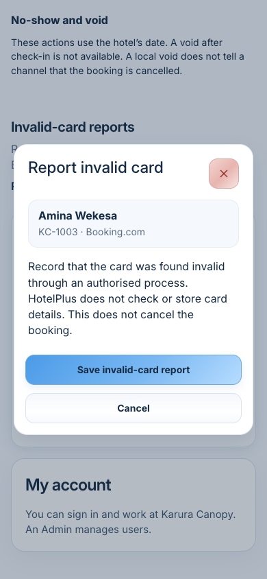
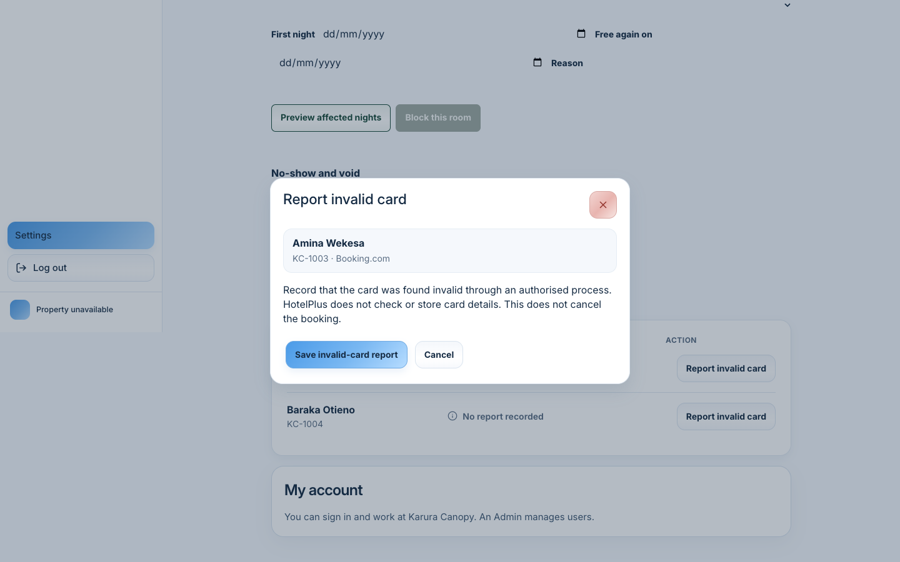
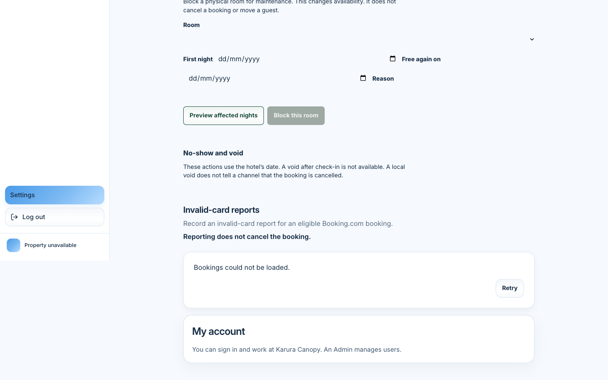
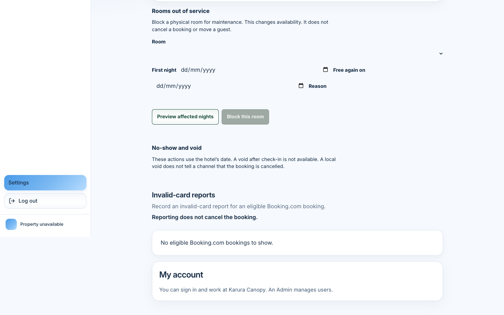
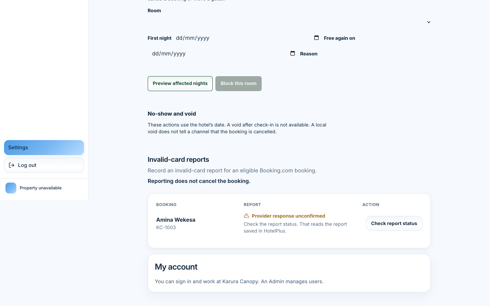
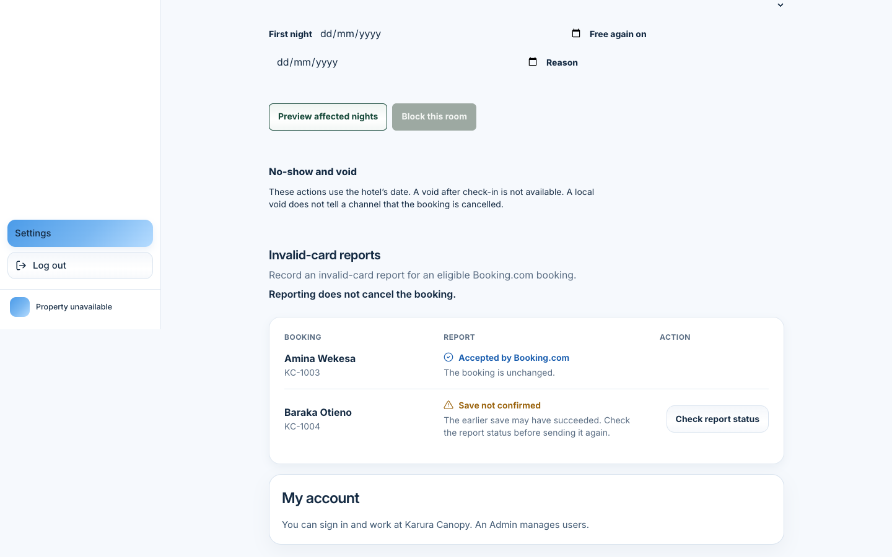
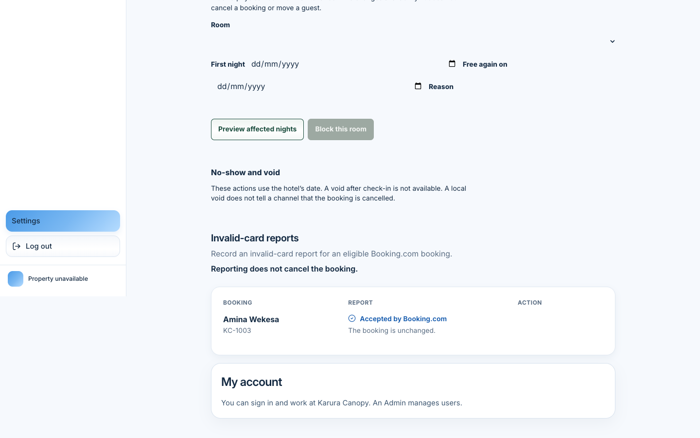
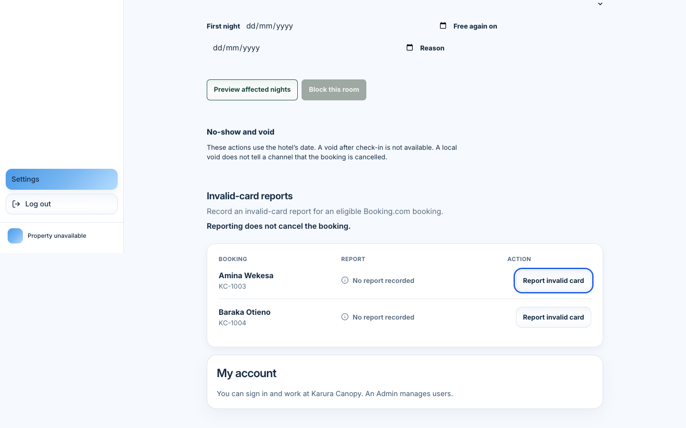
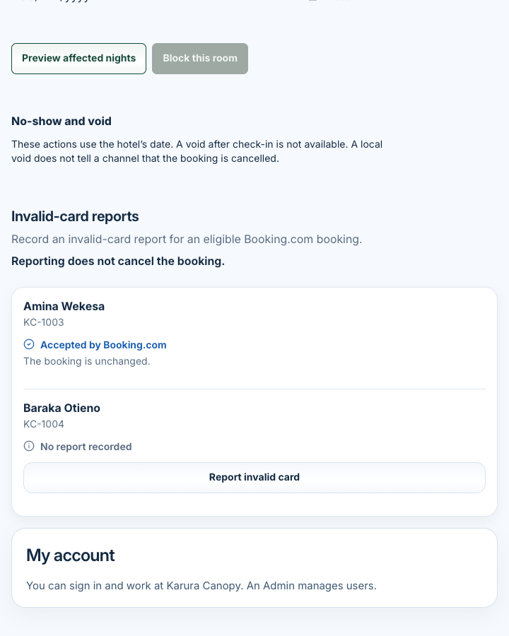
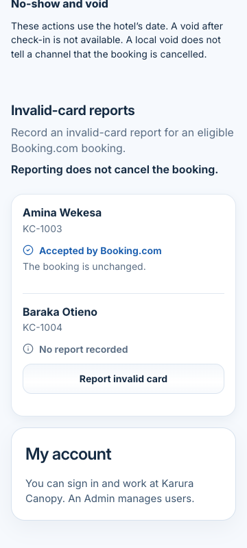

Local HotelPlus Settings, captured at application commit
f9e67c89a2471626c99e88f22734b8e05d790b5a.
The follow-up commit
3dd8a1f8ef24de932ec3bf613185d00abe345b3e
changes report precedence and request scope only. It does not change this layout.
Branch cursor/invalid-card-presentation (pull request 78).
Before images are the merged application
e0b86e17c2dc277a1d807bc59dceb5deee6787e6.
Playwright viewport screenshots in Chrome, device pixel ratio 1, one viewport, not stitched.
Each bitmap is the same size as its CSS viewport.
Intercepted fixtures only. The signed-in person is Fixture User. Provider responses are simulated and are named in the captions.
No shared candidate or preview data was seeded. No channel credentials and no session token.
Håvar’s visual acceptance is still open. This page is not a WCAG certification.
Headless Chrome left visualViewport.scale at 1 after Control and Equal, so 200% and 400% browser zoom were not captured.
The 720 and 360 images are CSS viewports of those widths, not browser zoom.
After. CSS viewport 320×700, bitmap 320×700. No horizontal overflow.
image
Confirmation
Shared dialog. Amina Wekesa, KC-1003, Booking.com. Blue Save and neutral Cancel.
CSS viewport 1440×900, bitmap 1440×900.
image

Shared dialog on a phone. CSS viewport 390×844, bitmap 390×844.
image

Same dialog with prefers-reduced-motion. The media query matched.
CSS viewport 1440×900, bitmap 1440×900.
image
List and report states

Failed initial read. Simulated HTTP 503. Copy: Bookings could not be loaded. Retry is offered.
This is not the empty-success screen. CSS viewport 1440×900, bitmap 1440×900.
image

Successful empty list. Copy: No eligible Booking.com bookings to show.
CSS viewport 1440×900, bitmap 1440×900.
image

Simulated provider response UNCERTAIN. Label: Provider response unconfirmed.
The explanation says the check reads the report saved in HotelPlus.
CSS viewport 1440×900, bitmap 1440×900.
image

Simulated ACCEPTED for Amina beside a lost save for Baraka.
Baraka shows Save not confirmed and Check report status. Amina is not offered another report.
CSS viewport 1440×900, bitmap 1440×900.
image

Simulated ACCEPTED save, then the next list omits the booking.
Amina Wekesa and KC-1003 remain on the row. CSS viewport 1440×900, bitmap 1440×900.
image
Keyboard and narrow reflow

Keyboard focus. The active control’s accessible name was
“Report invalid card for Amina Wekesa, KC-1003”.
CSS viewport 1440×900, bitmap 1440×900.
image

CSS viewport 720×900, bitmap 720×900. Not browser zoom. Rows stack. No horizontal overflow.
image

CSS viewport 360×800, bitmap 360×800. Not browser zoom. No horizontal overflow.
image